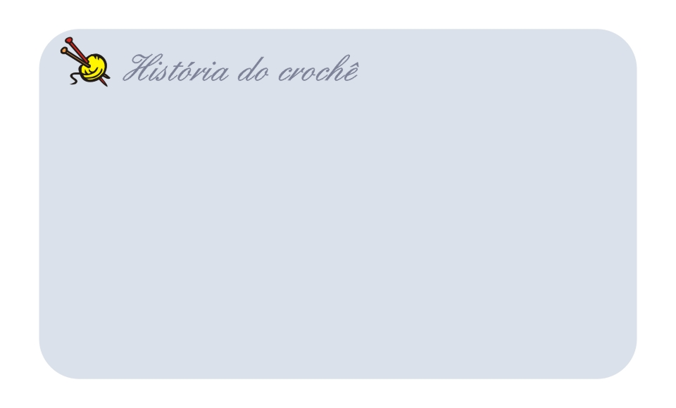

O termo crochê deriva do vocabulário "croc", que quer dizer "gancho". Como os demais
sistemas de fabricação de tecidos, é difícil traçar sua origem porque restaram poucas
amostras antigas.
Sabe-se que a técnica do crochê, desde o início, foi amplamente difundida
pelo mundo todo, pois foram encontradas amostras antigas na China, Turquia, África e Europa,
assim como nos EUA e América do Sul. O tecido resultante do crochê tem dois aspectos totalmente
distintos: se for trabalhado com linhas e agulhas finas, produzirá um tecido aberto e delicado
e muito semelhante à renda. Por outro lado, se forem utilizadas linhas e agulhas grossas, o
tecido resultará espesso e firme. Este ultimo tipo é o mais conhecido.
Os chineses utilizavam
para confeccionar gorros; os turcos chapéus e os escoceses gorros e capas pesadas que eram
utilizados pelos pastores - aí o crochê ficou conhecido como "tricô de pastor". Este tipo mais
compacto de crochê continua desfrutando de grande popularidade nos dias de hoje para confeccionar
múltiplas peças de vestuário como, por exemplo, suéteres, casacos, jaquetas, meias e gorros. é,
também, útil para fazer tapetes, mantas exales que proporcionam maior proteção contra o frio. O
tecido de crochê pode ser trabalhado em peças planas ou em anéis, que podem se transformar em
tecidos tubulares e medalhões.
Nos Estados Unidos, na época em que as famílias pioneiras lá se
fixaram, havia grande escassez de lã nova; assim, aproveitavam sobras de lã usada para fazer
medalhões multicoloridos. Estes eram unidos, como patchwork, para confeccionar mantas, tapetes
e xales. Este tipo de crochê continua ainda muito popular. Conhecidos como "quadrados da vovó" ou
"quadrados afeganes", esses medalhões de cores vistosas podem ser usados para confeccionar roupas
e também bolsas. O crochê é uma arte antiga e manual que revela muita criatividade. é feito com a
agulha e linha e apartir disso cria-se outras peças. O crochê tem entrado até no mais alto nível
de costura, muitas griffes estão usando esse artesanato.
